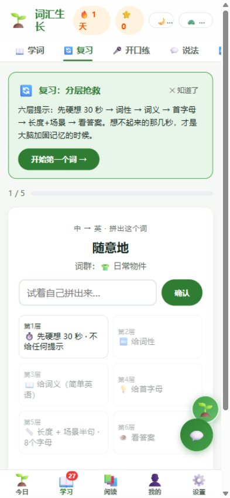
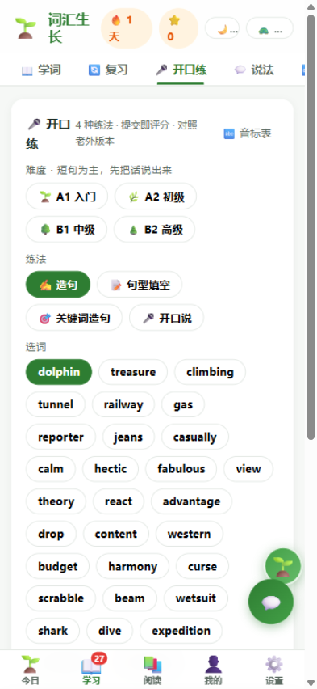
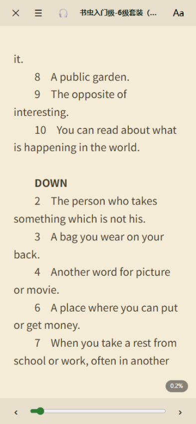

如果这些你也经历过，那你找对地方了
单词书背了 20 遍，见到还是"好像认识"。死记硬背对抗不了遗忘曲线。
阅读勉强过关，一开口就卡壳。词汇量是"认识"的，不是"会用"的。
打卡式产品靠愧疚感续命。没有正反馈的学习，注定坚持不下去。
学 → 复 → 用 → 读，一个让单词自己扎根的闭环
词群故事成串学，
图解主题贴近生活
六层提示分层抢救，
想不起来的几秒在加固
造句、开口说出来，
AI 当场评分给纠正
真实书里遇见它，
点词收词带原句回炉
整套产品的第一批学习数据，来自「英语自学建设系统」（Hermes）的真实自学资产——不是拍脑袋设计的功能清单。
每一个功能，都对应闭环里的一环
先硬想 30 秒 → 词性 → 词义 → 首字母 → 长度场景 → 答案，六层提示逐级解锁。按你"忘到第几层"安排下次复习时间——遗忘是数据，不是失败。还带听音辨词模式，耳朵也一起练。

四种练法：造句、句型填空、关键词造句、开口说。提交立刻打分，AI 给出更地道的说法和要点纠正——写错也是生产模式，敢说就赢了一半。

内置书虫系列等英文书，长按生词即出词义、发音和整句例句，一键收进词库带着原句复习。在真实语境里遇见的单词，才真正属于你。

今日目标四件事打卡、今日主题词群、今日一句跟读——每天 10 分钟，三件事加一次阅读就够。不靠打卡绑架，靠正反馈续命。
免费大模型驱动：教词、陪聊、情景对话，还能给你出每周学习周报和学习计划。
2 分钟 30 题，基于牛津分级词库估算你的真实词汇量，乱猜可骗不过它。
"你想说的话 → 老外的说法"积累库，外加 48 音标口诀——发音地基一起打。
不需要信任我们的服务器，因为数据压根不在服务器上
是。学习、复习、阅读、开口练全部免费，无广告。AI 学伴每天有免费额度，超出后可继续用基础功能。
数据保存在你手机本地。覆盖安装新版本不会丢数据；换手机前用「设置 → 数据管理 → 导出备份」导出 JSON 文件，在新手机导入即可。
不用。词库、复习、阅读全部离线可用；联网只在 AI 学伴对话、发音评分和检查更新时需要。
它们解决"认识单词"，词汇生长解决"会用单词"：每个词都要经过开口产出和真实阅读检验，AI 当场纠错。方法不同，目标不同。
不麻烦。打开应用时自动在应用内静默完成更新（有进度条），全程不用跳出应用，数据不会丢。